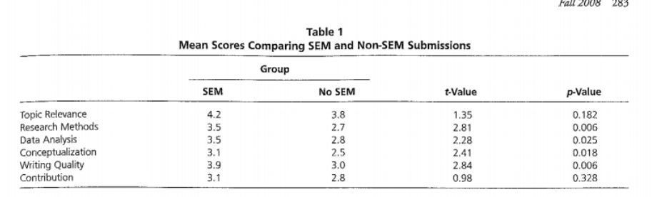
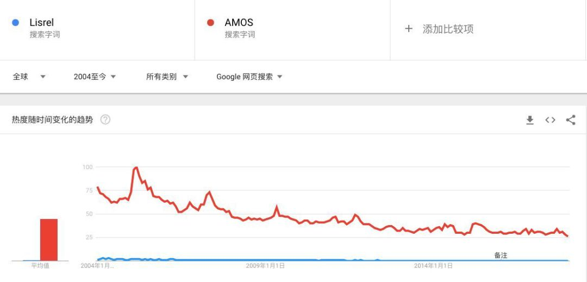
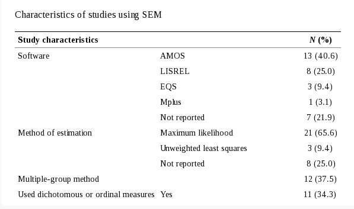
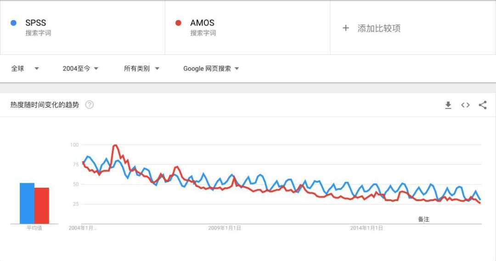
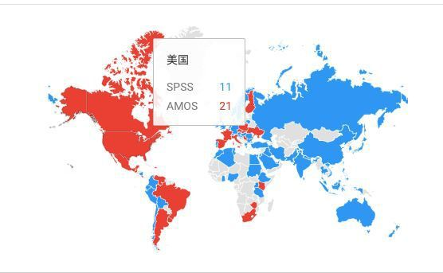
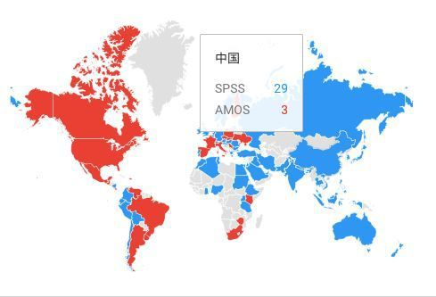
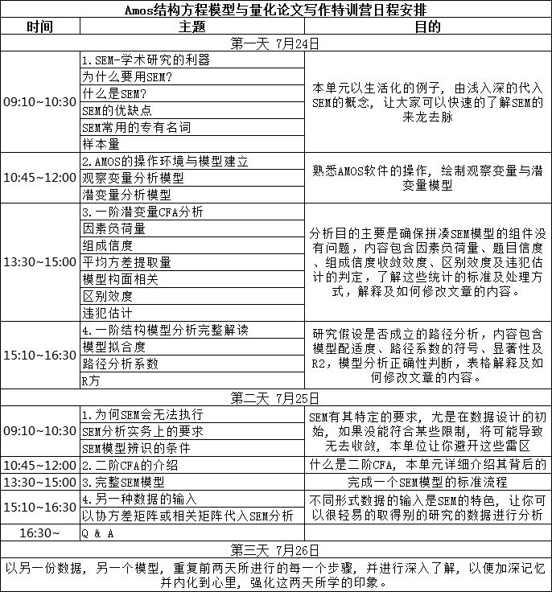

收录于合集
当我们不少的小伙伴还在为SPSS发愁的时候，不知道从何时起， SEM （Structural Equation Modeling，结构方程模型）突然变得风声水起。学长发现，不少同学的论文都开始玩起高大上的SEM了，朋友圈也经常发现有人晒出精巧的结构方程。年前和一位小伙伴聊天，我发现作为一个社会工作专业的硕士毕业生，她的论文已经把SNA（社会网络分析）和SEM结合起来。这让小编想起多年前做论文，苦于当年（2007）年还找不到关于结构方程模型的中文教材，只能打印一份份英文指导和PPT讲义的情景还历历在目。 但十年弹指一挥间，现在作为一名社会科学的毕业生，你要说没听过SEM还真的有点说不过去了。 如果你是老师，碰巧还是搞定量，如果不会用SEM搞个模型啥的，那就真对不起你拿的薪水了。（在美国，所有合格的助理教授以上都会接受SEM的训练）
用SEM更容易发文吗？
SEM因为更复杂，看上去更高大上，那是否用SEM就会更容易发文呢？在早期，因为期刊的编辑对SEM还不是特别熟悉，所以面对庞大、复杂的SEM模型，文章投稿者的确更容量获得发表的优势，但现在情况又如何呢？
2008年，美国著名统计学大师Barry J. Babin、Joseph F.Hair和James Boles合作发表了一篇文章Publishing Research in Marketing Journals Using Structural Equation Modeling，在这篇论文中三位学者通过追踪美国市场营销领域顶尖期刊投审稿及发表情况得出结论： 使用结构方程模型（SEM）能够提升论文质量和评审专家的推荐力度，增加发表概率。具体结论有以下几个：
论文使用SEM的拒稿率为 70.2% ，而没有使用SEM的被拒率是 84.1% ，统计显著（p=0.034）

用什么软件做SEM？
作为一种统计技术，SEM最早可以追溯到1910年代，但真正成熟是在1960-1970年代，随着各种模型的发展，也发展出了各种能够方便快捷使用的SEM软件技术，比如我们耳熟能详的AMOS、Lisrel等等，那究竟哪一种软件更热门呢？
我们首先在Google Trend中进行了对比。从数据中很明显地可以看出，2004年至今，红颜色所代表的Amos全面碾压了Lisrel。

另外，2009年发表的一篇叫 《A Systematic Review of Structural Equation Modelling in Social Work Research》 的文章提供了社会工作领域的SEM软件的使用对比图，其中AMOS软件占到 40% ，Lisrel占比25%。

我们没有中国的数据，但如果在中国的话，相信AMOS会使用地更多。主要原因是： AMOS提供了类似SPSS式样的图形界面，会更加方便你的操作，而Lisrel则需要通过编程的方式进行 。
中国的SEM是小众吗？
SEM是不是小众呢？我们在Google Trends里比较了SPSS和AMOS这两个软件从2004到2017年的数据，结果如下：

可见这两个软件，其实一直是不相上下地走了这么多年。但你可能觉得为啥俺们这旮旯就只听过SPSS呢？所以我们来看数据，下图一是美国的数据，图二是中国的数据。


在美国AMOS的搜索指数21，SPSS是11，而在中国AMOS只有3，但SPSS却有29。所以，中国目前的SEM肯定相比于SPSS算是小众。但是正所谓要居于学术前沿，尽早掌握AMOS和SEM对你的学术很重要。
所以学长要郑重为大家推荐一门课程，学术中国和“亚洲统计一哥”张伟豪耗时一年，用心打磨的《量化论文写作与Amos数据分析特训营》。
7月24日—26日，3天时间，为你拆解最经典的结构方程模型文章，带你跑出最让期刊编辑眼前一亮的报表，教你学会量化论文每一部分的写作“套路”，让你彻底掌握国际发文利器结构方程模型及其软件Amos，实现顶级期刊发文突破。
**
**
这门课为什么值得推荐？
**
**
思路至上，经典论文贯穿始终
学习的最终目的是你自己写出好论文并且发表，其捷径就是模仿。我们精选了10篇SEM中、英文经典论文, 让你学习的每一步都能有效促成优秀论文的形成。你将直观地了解好的量化论文是什么样的，有哪些特质，文献综述、研究架构等每一具体部分应该如何撰写，如何跑出和经典论文中一样漂亮的报表，如何将分析结果巧妙呈现在论文中…… 课程结束后，你至少可以“依葫芦画瓢”，独立完成一篇优秀的SEM量化论文 。
数据分析实战，让你真正会操作
你将通过两套数据的实战演练，掌握数据分析及软件操作部分。首先，你会和老师使用同一套数据，跟随老师一步一步学习Amos的核心操作步骤。在基本掌握后，你将用经典论文中的真实数据自行检测学习结果，老师和助教会帮助你分析出和论文中一样的报表，让你彻底掌握各个操作流程在真实研究中的应用。你将必须携带个人电脑，参与实地的数据演练，最终目的，是让你自己跑出数据，输出结果，并给出解释。
顶级助教现场手把手指导，再也不用担心跟不上
课程将采取面授形式，你将与“亚洲统计一哥”面对面深度互动，同时，更有一哥团队教授级别的助教亲临现场，他们都是发文高手，熟知量化研究和论文写作中的各种错误，熟悉各种模型的架构和解读。即使课程结束，助教们也会在群里提供答疑，继续陪伴你完成以后的量化研究，见证你的每一次发表。
智能量化研究系统的账号初体验
张伟豪团队历时10年，“十年磨一剑”，研发了智能量化研究系统，让你可以不再学习复杂的结构方程模型操作，获得你想要的模型及结果解释，更有选题系统和资料检验系统，帮助你确立选题方向，检验数据的收敛度等。凡报名学员，都将获得3个月的系统免费试用权。
老师怎么样？
张伟豪 ，台湾统计学专家，因精通结构方程模型被称为“亚洲一哥”，曾任IBM公司软件资深顾问，现创办三星统计服务有限公司，并担任首席数据分析师和首席培训师；精通多种数据分析应用技术，常年赴大陆及海外教学，授课通俗易懂、风趣幽默，受到广泛好评。
适合什么样的人学习？
你需要具备一定的量化研究和数据分析方法基础，如会SPSS基本操作 （如基础不够，可在课前申请免费学习，具体咨询学长） ，决心掌握结构方程模型与Amos数据分析能力，发表CSSCI、SSCI量化论文。如果你近期计划申请课题或硕博士开题，尤其建议你来学习，会少走许多弯路。
3天课程会讲哪些内容？

详情介绍
时间： 2018年7月24日-26日
地点： 天津（详细地点另行通知）
招生人数： 100人（不含学术中国会员）
咨询联系人：
张老师：手机或微信：15501101763；
刘老师：电话：010-56204616；手机：18600520319；
回放： 提供一个月视频回放
报名方式
**
**
现场参加：
报名费用： 2500元/人
5人及以上团体报名： 2200元/人
▷ 注： 费用包含报名费、资料费、证书费等，学员食宿及往返交通费用自理
1、扫描或长按下方二维码直接报名
2、对公转账：（请转款前与主办方确认是否还有名额，确认后进行转款，在摘要中注明姓名和联系方式）
企业开户名称：北京思高乐教育科技有限公司
开户行：招商银行股份有限公司北京双榆树支行
银行卡号：110918346010101
网络直播报名：
报名费用： 1500元/人
5人及以上团体报名： 1000元/人
扫描或长按下方二维码直接报名
▽
注意事项
1、报名截止日期：2018年7月20日17:00（具体截止日期根据实际招生而定，人员招满，将会立即关闭报名通道）。
2、如您报名后有事不能参加，请在报名之后的10-15天之内办理退费，并将收取6%的手续费！2018年7月17日17:00之后不再接受退费！
3、本次会议可提供增值税普通发票，如需开具，请在购买时点开“是否开发票”项，并根据自己单位财务部门要求填写抬头和类目信息（一旦开具不能重开），信息填写完整的老师可现场领取发票和会议通知，报名网络直播的学员发票通过快递邮寄领取。
4、请学员自带笔记本电脑，自行安装AMOS软件。
▷部分资料参考自：社会学吧